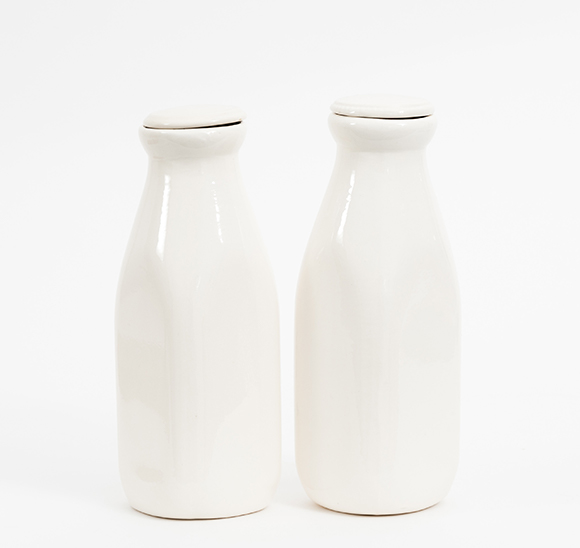

얼룩 제거
식품의 섭취 가능 기한을 의미하는 것은 유통기한이 아닌 소비기한입니다.
소비기한이 지나 섭취할 수 없는 식품을 활용하여 얼룩을 제거할 수 있습니다.
식품들의 다양한 재활용 방법을 알아보세요.
커피
주방세제, 설탕을 제외한 커피가루, 물을 잘 섞어
수세미를 이용해 프라이팬을 닦으면 기름때가 제거됩니다.
녹차
그릇에 물을 붓고 녹차 티백을 잘 적신 후, 전자레인지에 2분간 가열해주면 됩니다.
냄새를 잡아줄 뿐만 아니라 마른 수건으로 물기를 닦아주면 기름때 청소도 가능합니다.

우유
우유를 헝겊에 살짝 묻혀 가죽이나 에나멜 소재의 신발을 닦으면 광택이
살아납니다. 그리고 미지근하게 데운 우유에 금 소재의 귀금속을 담갔다 꺼내면
본래의 광택을 되찾을 수 있습니다.
케첩
주변에 녹이 슨 물품이 있다면, 손에 케첩을 묻혀 녹슨 표면에 적당히 문질러
30분 정도 두면 됩니다. 시간이 지난 후 쿠킹 호일이나 마른 수세미로 구석구석
닦아내 흐르는 물에 행구고, 마른 천으로 물기를 제거하면 됩니다.

밀가루
기름기가 있는 식기나 주방용품에 밀가루를 뿌려두었다가
설거지를 하면 기름때를 말끔하게 제거할 수 있습니다.
마요네즈
유리창이나 스테인리스 재질의 주방용품에 얼룩이나 지문 자국, 스티커 자국이
남아 있다면 깨끗한 천에 마요네즈를 약간 묻혀 닦아주면 제거 효과가 있습니다.